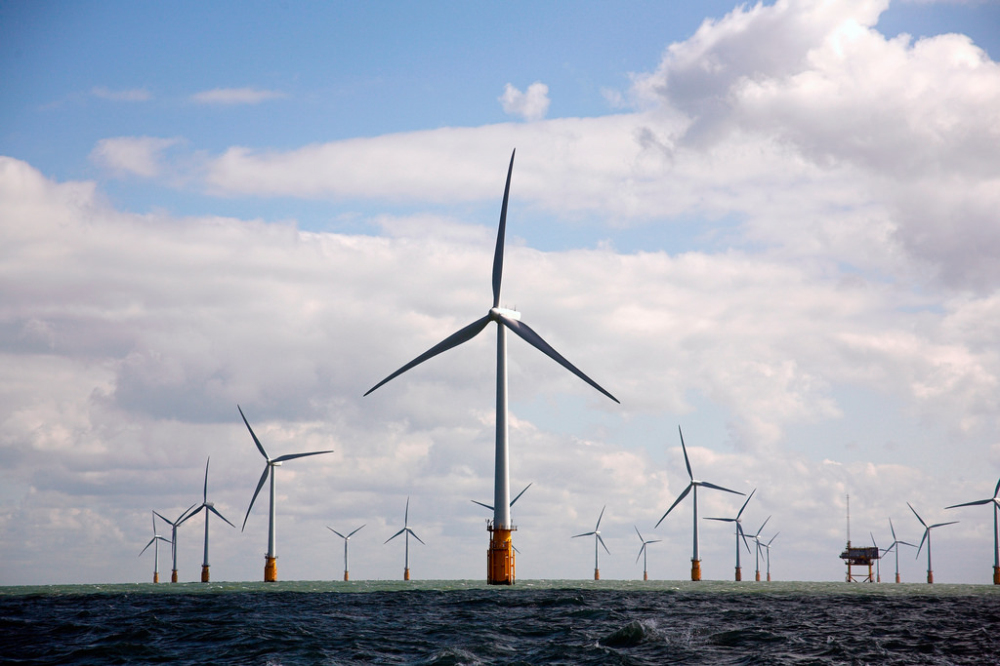

今年聯合國為6月8日世界海洋日所訂定的主題是「我們的海洋， 我們的未來」。這句話對過去一年面臨諸多挑戰的台灣，更是有如當頭棒喝，台灣所面臨的挑戰及回應這些挑戰的答案，不就在海洋嗎？
民進黨政府將 2025 廢核列為國家重大政策目標，為此，需要在數年內將「綠能」的供應拉抬到足以填補核電缺口，這又以海上的離岸風力發電具有一定的開發潛力。建設離岸風力發電之工程技術或許不難，但目前政府或風電業者所遇到的問題主要在典章制度面上。
我國迄今沒有一部上位的「海域使用管理法」，足以提供理性、 有系統的「海域空間規劃」，用以判斷那些海域利用方式是否符合海洋海洋生態條件、創造社會較高福祉、且彼此之間是相容的，而得以在同一海域時空環境內發生，並得以事先排除不相容或衝突性的海域利用方式，藉此提供政府與業者一個穩定可預期的政策施行及產業發展前景。
再者，動輒上億元投資的海域風機與海底電纜不僅應受到 1982 年聯合國海洋法公約第 60 條第 4、5 項規定設置 500 公尺之「安全地帶」的保護，並應依一般國際實踐劃設點狀、塊狀或線狀的保護區，以確保航行以及這些設施與結構的安全。但如何劃設這些安全地帶或保護區，又如何執行必須的監管與執法，我國則僅有在領海及鄰接區法第 11 條第 2、3 款及專屬經濟海域及大陸礁層法第 8 條第 3、4 項有原則性之規定，而無更進一步的細膩法令規範，或根本欠缺在海域空間上有著整體的「海洋保護區法」。這些缺失使得我國日後的海域風機及海底電纜曝露在不當下錨、拖網或船舶航行的破壞風險之下。
此外，離岸風力發電更面臨漁會或漁民「據海索賠」的威脅。漁業署於 105 年 11 月 30 日發布了「離岸式風力發電廠漁業補償基準」， 作為業者與漁會「談判」的依據。但此基準不具任何法律授權，而有圖利特定他人之嫌，且其計算公式中不僅有著經濟學技術層面上的嚴重錯誤，更有將「未來並未取得之利益」列入計算，而混淆了「補償」（填補既有損失）與「賠償」在行政法概念下的分際。除適法性的問題外，該基準更有將性質為全民「共同財產」之海域空間及其自然資源視為漁會或漁民「私產」的根本性價值錯誤。這亦體現我國現行漁業法的落伍與反進步。
歐盟為打擊「非法、未報告及不受規範漁捕行為」，自前年 10 月起對台灣發出黃牌警告，漁業署力促「遠洋漁業條例」在立法院三讀通過，但歐盟在今年 5 月更新打擊名單後，台灣仍高掛黃牌。此一立法努力不僅未獲歐盟青睞，更破壞了現行漁業法的整體結構。漁業法中以船舶捕魚的「特定漁業」專章是否還要存在？漁業法賦予漁會及漁民錯誤「準物權」觀念的「漁業權漁業」是否亦應予以廢除？均到了應整體考量及修正的地步與時機。否則，一部完全跟不上國際主流價值，又阻擋國家在海洋上求發展的漁業法，其存在的意義又何在？
海洋是台灣安全的屏障，亦是發展前景之所繫。在世界海洋日的今天，政府及社會實應徹底反省我國在海洋典章制度上的落後與不堪。